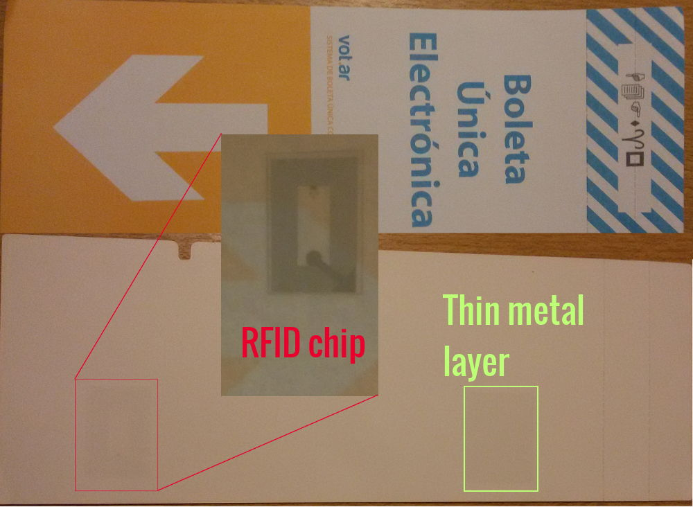
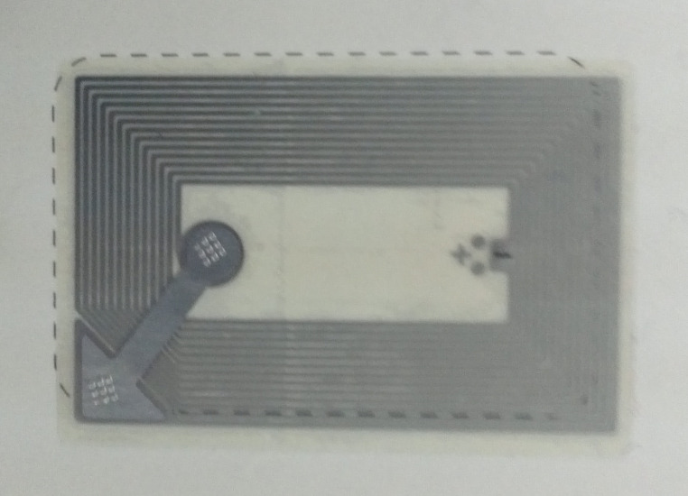

¿Podemos votar con computadoras?
Análisis del sistema electoral y qué implica utilizar computadoras como intermediarias entre el votante y el sufragio.
La problemática nacional e internacional, y las posibles alternativas de solución.
¿Cómo mejorar nuestro sistema electoral?
¿Cómo es nuestro sistema electoral?
Sistema de Boleta Partidaria (sistema Francés)
Problemas
- Robo de boletas
- Boletas falsas
- Boletas marcadas (clientelismo)
- Voto cadena o calesita
Escrutinio
1. Mesa
- Lo realiza Presidente de mesa ante Fiscales
- Cuenta votos, genera Telegrama y Acta
2. Provisorio
- Lo realiza el Poder Ejecutivo
- Cuenta Telegramas
3. Definitivo
- Lo realiza Poder Judicial
- Cuenta Actas
Vot.Ar/Boleta Única Electrónica
Aunque tenga respaldo en papel, no deja de ser voto electrónico
Visión general de Vot.Ar
Boleta
Apertura de mesa
- Se enciende la máquina y se inserta el DVD.
 El Presidente se identifica usando credencial (RFID) y PIN.
El Presidente se identifica usando credencial (RFID) y PIN.
 Selecciona opción de Apertura de Mesa e ingresa la información solicitada.
Selecciona opción de Apertura de Mesa e ingresa la información solicitada.- Inserta una boleta especial donde se imprimirán y grabarán los nombres del Presidente y Fiscales, la hora de apertura y un código QR.
Votación
|
 1
1
|
|
 2
2
|
|
 3
3
|
|
 4
4
|
|
|
Cierre de mesa
Al término de la votación (18hs):
- El Presidente aproxima su credencial y luego el Acta de Apertura, y selecciona la opción de Cierre de Mesa, informando la hora actual.
- Inserta una boleta especial de Cierre que tendrá información similar a la de Apertura.
Escrutinio de mesa
- El Presidente abre la urna.
- Retira cada boleta y la acerca a la máquina para contabilizarla, debiendo verificar la impresión (*).
- Al finalizar el conteo, inserta una boleta especial donde se imprimirá y grabará el Acta de Mesa.
- Luego inserta otra boleta especial donde se imprimirá y grabará la misma información para ser transmitida.
Escrutinio provisorio
- Un técnico conectará una máquina de la escuela a Internet.
- Cada Presidente de mesa le entregará el Acta de Transmisión.
- El técnico transmitirá los resultados al Centro de Cómputos.
Escrutinio definitivo
- La Justicia Electoral recibe las Actas de Mesa.
- Usando una máquina similar a las anteriores, se realiza el conteo.
Los problemas de Vot.Ar
Credenciales vulnerables
El sistema de credenciales no posee autenticación ni cifrado, permitiendo replicar cualquier credencial sin mayor esfuerzo.

Multivoto

Chip RFID
El voto se puede leer remotamente
El sistema oculto

Transmisión de resultados
Esto pasó
Voto electrónico en el mundo
Holanda (2006)
Irlanda
Bélgica
Alemania
1. El principio de la publicidad de la
elección del artículo 38 en relación con el art. 20 párrafo 1 y párrafo 2
ordena que todos los pasos esenciales de la elección están sujetos al
control público, en la medida en que otros intereses constitucionales no
justifiquen una excepción.
2. En la utilización de aparatos
electorales electrónicos, el ciudadano debe poder controlar los pasos
esenciales del acto electoral y la determinación del resultado de manera
fiable y sin conocimientos técnicos especiales.
EE. UU.
India
Brasil